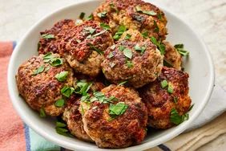

Recipe for meatballs

Description
Learn how to make meatballs with this recipe that is the best meatball recipe I have ever tried! I've used the combination of pork, beef, and veal but you can make them with just ground beef and they still taste great.
Definitely use fresh bread crumbs and freshly grate your cheese instead of using the canned variety... It really does make a difference!
Ingredients
You will need these ingredients for the world's best meatballs.
- Ground meat:You will need a blend of ground beef, ground veal, and ground pork.
- Eggs:You will need one or two eggs to help hold the ingredients together.
- Italian bread:You will need slightly stale Italian bread.
Steps
You will need to follow these steps to make the dish.
- Combine the ingredients in a bowl.
- Add the breadcrumbs and slowly add water.
- Shape the mixture into meat balls.
- Fry the meatballs in olive oil.